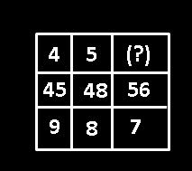
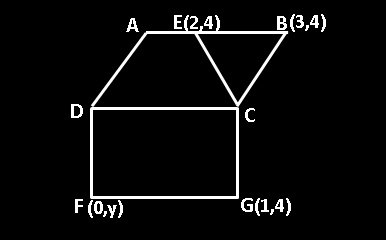

1. Find each of base angles in radian of an isosceles triangle whose vertical angle is four-seventh of base angle.
i. (11π⁄18)c ii. (π⁄2)c
iii. (7π⁄18)c iv. (8π⁄15)c
2. What is the missing term ?

i. 8 iii. 9
ii. 6 iv. 7
3. In the following figure quad. ABCD is a parallelogram. Find the value of 'y' in line FG if quad. FGCD is a rectangle.

i. 1 iii. 15
ii. 13 iv. 4
|